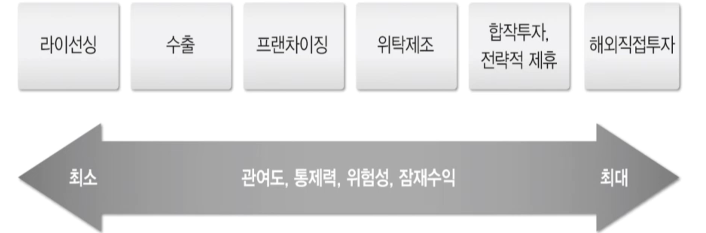
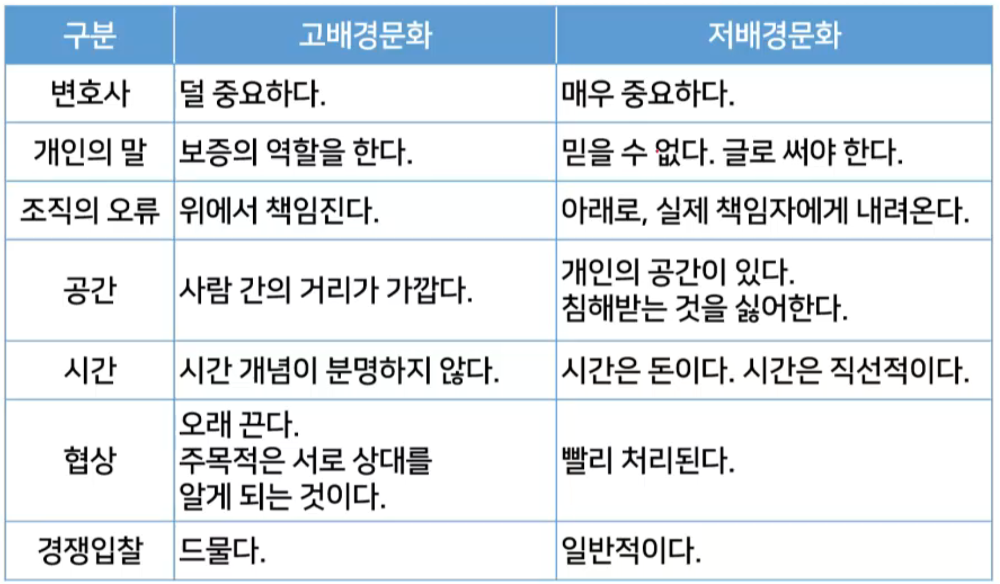

07-글로벌경영
목차
글로벌화의 의미와 원인
해외진출 전략
기업의 글로벌화
글로벌 경영에 영향을 미치는 요인들
문화의 분류
글로버화의 의미와 원인
국제화
기업의 경영활동이 한 국가의 경계를 넘어 2개국 이상에서 이루어지는 현상
글로벌화
개별국가나 지역을 별도의 시장으로 보지 않고 통합적으로 파악하여 **동일한 전략(표준화 전략)**을 사용하는 단계까지 나아간 국제경영
국가간 교류의 증진
국가간 무역은 전쟁등 특별한 시기를 제외하면 꾸준히 증가
해외에서 제품을 직접 생산,판매하기 시작하면서 글로벌화가 가능해짐
WTO 체제의 출범으로 무역자유화가 진전되고 경쟁의 공정성이 강화됨에 따라 기업은 국가의 보호를 받으며 성장할 수 없게됨
생산과 판매의 효율성을 극대화하기 위한 최적의 입지를 해외 각지에서 찾게 됨.
교통 및 통신의 발달과 시장의 동질화
해외라는 심리적 거리감을 줄여주어 기업들의 해외 진출을 용이하게 함
전 세계 소비자의 필요와 욕구가 동질화 되는 경향이 생겨남
표준화된 전략을 수행하여 원가를 줄이는 것이 가능해지면서 기업의 글로벌화가 급진전함
기업의 자발적 글로벌화
기술의 발달과 소비자 선호의 급변등으로 제품수명주기가 단축됨 (
PLC: 제품 수명 주기)단기간에 제품 생산,대량 판매하지 않으면 경쟁에서 살아남기 어려워짐
PLC가 줄어들어 빠르게 개발하고 대량으로 판매하지 않으면 살아남아야함
국내에서 쇠퇴기에 접어든 제품을 성장기 전 단계에 있는 해외시장에서 생산.판매함으로써 수명주기 연장 동기 발생
거대 시장 진출,전략적 제휴의 필요성 증대
해외진출 전략

라이선싱이나 수출은 위험은 낮으나 수익이 낮다.
해외직접투자는 관여도가 높고 잠재수익도 높고 위험도 높다.
라이선싱
진출국 기업에 로열티를 받고 제품 제조 혹은 상표 사용 권리를 주어 해외 진출
권리를 주는 기업 : 라이선서(licensor)
권리를 받는 기업 : 라이선시(licensee)
공장을 세우는 단계부터 생산과정에 직원을 파견하여 기술 이전
직접 생산 및 마케팅 비용을 들이지 않고 수익을 얻을 수 있어서 위험이 적음
로열티와 약간의 부가수익만 얻을 뿐,대부분의 수익은 해외기없이 갖는다.
수출
간접 수출
수출 경험이 없어 무역상 혹은 종합무역상사에 수출입업무를 위탁
직접수출
직접 해외시장을 개척하고 수입업자를 찾아 모든 절차를 수행
직접 수출은 간접수출보다 잠재수익성이 높고 기업의 통제력도 높으나 경비가 많이 들고 위험성이 큼.
현대에는 회사 규모가 커지면서 간접 수출보다 직접 수출을 방식을 많이 사용한다.
프랜차이징
사업 아이디어나 성공적인 사업체를 가지고 있는 사람이 제삼자에게 아이디어나 사업 경영방식을 사용할 권리를 판매하는 것.
권리를 판매하는 사람:프랜차이저(franchiser)
권리를 구입하는 사람:프랜차이지(franchisee)
맥도날드,KFC처럼 미국 기업이 해외에 진출하는 방식으로 많이 사용
위탁제조
외국기업 생상 제품에 자신의 상표 부착 판매 허용하여 해외진출 (
OEM)나이키: 연구개발 및 디자인은 미국,생산은 해외에서 가장 효율적인 기업에 위탁
공장 설립비용 등 진입 비용을 들이지 않고 진출을 가능하다.
기술 누출로 인해 위탁업체가 새 브랜드를 출시 할 수 있다.
합작투자,전략적 제휴
합작투자
두 개 이상의 기업이 공동으로 투자하여 사업을 수행하기 위해 파트너십을 맺어 해외에 진출하는 방식
현지 사정에 빠른 현지 기업과 협력하므로 시장 적응이 빠르고 실패 위험을 줄일 수 있음
현지 파트너가 경쟁기업으로 등장할 수 있고,기업 탈취 목적으로 현지 정치인,노동자 등과 연계해서 문제 야기
전략적 제휴
합작을 통해 기업을 형성하지 않으나 생산.마케팅 측면에서 장기 파트너십을 맺어 경쟁우위 확보 시도
삼성과 애플과 같이 경쟁업체면서 부품을 제조
해외직접투자
해외에 자회사를 설립 본부의 통제 하에 생산,물류,프로모션,가격 책정,마케팅 등 모든 기업을 자회사가 진행하는 방식
투자한 기업을 완벽하게 통제할 수 있으며 잠재수익이 가장 큰 방식
대규모 자본이 투입되고,경영의 모든 책임을 져야하는 높은 위험이 수반됨
극단적인 경우에는 해외 정부에 의해 자산을 빼앗기기도 함.
베네수엘라, 중동에서는 아직도 있다.
기업의 글로벌화
국내기업
설립 초기에는 대부분의 기업이 국내시장에만 관심을 가지며,국내에서 생산 및 판매
생산.판매의 지리적 영역이 국내에 머물기 때문에 기업가의 사고도 국경을 벗어나지 못함
국제기업
첫 단계에 있던 국내기업들이 국제적 기회를 인식하고,이를 추구하기 시작하면서 국제기업으로 발전
국제적 기회가 있을 때나 잉여생산물이 있을 때 해외에 처분 노력,주된 관심은 여전히 국내
본국 시장중심적 경영관: 자국의 인력,경영 형태 및 경영방식, 가치 등이 세계의 어느 곳보다 우수하다고 생각
다국적 기업
시간이 흐르고 경험이 누적됨에 따라 현지 생산.판매를 위해서 해외에 진출
시장의 차이를 인식하고 진출국의 시장 특성에 맞추어 국가별로 현지화된 경영:다시장 전략
예전에는 기술의 부재등 한계로 인해서 못햇던 것
다중심적(polycentric) 경영관: 각국의 자회사는 본사와는 거의 무관한 독립적인 조직을 갖추고 독립적으로 운영
이익은 본국으로 송금하는 형태를 다국적 기업이라고 합니다.
글로벌기업
본사와 자회사의 구분없이 통합하는 조직을 통해 글로벌 차원에서 효율 극대화를 추구하는 기업
각 기능을 가장 잘 후생할수 있는 국가에 해당하는 기능 집중하여 글로별 효율성 달성
세계시장 중심적(geocentric) 경영관: 세계 각지의 시작에는 이질성과 동질적인 부분은 표준화하고 이질적인 부분은 현지화하는 글로벌 전략을 수립하고 실행
글로벌 경영에 영향을 미치는 요인들
글로벌 경영의 경제요인
무역 및 해외직접투자의 증가
국제 경제교류의 핵심이었던 무역은 규모가 점차 확대되고 있는 추세
지금까지도 절대적인 위치를 차지
해외 직접투자 증가
세계경제를 좀 더 밀접하게 연결시키는 것은 해외직접투자
1970년대 이후부터는 직접투자의 비중이 점차 커지는 추세
우루과이라운드 타결과 WTO체제의 출범
공산품뿐 아니라 농산물을 포함한 모든 재화와 서비스로 교역을 확장하고, 자본과 기술이 자유롭게 교역이 될 수 있도록 한다는 것이 WTO 체제의 목표
기업이 더는 국제경쟁에서 벗어날 수 없으며, 국가의 지원에서 벗어나 스스로 경쟁력을 키워 나가야 함을 의미
지역톰합
근본적으로 시장기회의 확충(시장의 거대화)을 지향함. 참여국에는 관세를 호혜적으로 부과하고, 비참여국에는 관세장벽을 설치함으로 시장이 확대
가장 기본적인 경제협력으로는 지역협력기구(RCD:regional cooperation groups)라고 하는 국가 간 협력이 있음
특정 산업을 개발하여 생산품의 일정 비율을 나누어 갖는 형태이나, 지역통합이라고 하기는 어려움
일반적으로 통합의정도에 따라 관세동맹,자유무역지구,공동 시장,경제연합 정치연합의 순으로 분류
글로벌 경영의 기술환경
모든 분야에서 첨단기술이 등장하고 있으며 기술 발전의 속도 역시 빨라지고 있음
교통,통신의 발달은 모기업과 자회사간의 공간적.시간적 격차를 극복하여 자회사를 조정.통제하는 것이 가능해짐
기능 분산.통합이 수월해지면서 글로벌화가 가능해짐
기술 발전과 함께 나타난 중요한 현상은 짧아진 제품 수명주기
신제품을 단기간 내에 대량생산할 수 있는 공정 기술과 대량 판매할 수 있는 거대 시장 필요
글로벌 경영의 정치.법 환경
각국 정부는 관세나 비관세 방벽을 통해 수입을 통제하는 등 외국기업의 활동을 다양한 수단으로 규제
규제는 글로벌화의 물결에 따라 점차 완화되고 있는 추세
정부의 규제는 해외 투자의 유입을 막고 기업 경쟁력을 약화시키며,자국기업마저 기업 활동에 유리한 곳으로 떠날 가능성이 잇다.
글로벌 경영의 문화환경
문화의 정의
문화는 가지고 태어나는 것이 아니라 습득하는 것.
문화를 구성하는 각 요소는 서로 밀접하게 연결되어 있음
문화는 사회 구성원에 의해 공유됨
해외시장에 진입할 때 범하기 쉬운 오류
자기 기준의 오류(self-reference criteria)
자신의 문화적 경험을 해외에 적용
자기민족중심주의(ethnocentrism)
자신의 문화가 다른 문화보다 우월하다고 믿는 경향
문화의 분류
고배경문화와 저배경문화
진출국의 문화를 이해하는 것이 굉장히 중요하기 때문에 그 문화를 어떻게 이해할 것인가를 우리가 생각해야합니다.
문화를 이해하는 방법중 하나가 어떻게 분류할 것인가를 본다.
문화를 분류하는 하나의 기준에 관해서 생각해봅니다.
미국 인류학자인 홀은 배경(context)을 기준으로 문화를 분류
맥락-커뮤니케이션을하는데 상황 혹은 배경을 말합니다.
커뮤니케이션 상황이 얼만큼 명시적으로 말에 나타나는지 않나타나는지로 나눈다
배경이란 커뮤니케이션 상황 또는 명시적으로 표현되지 않는 의도를 말함
배경의 영향력에 따라 고배경문화와 저배경문화로 구분
고배경문화
전달하려는 정보가 말에 명시적으로 담겨 있기보다는 말하는 배경에 담김
말의 뜻을 그대로 받아드리면 안되고 이해를 해야하는 것 - 한국도 고배경문화라고 한다.
저배경문화
모든 정보가 명시적 언어로 그대로 표현됨
미국에서 대답은 YES 는 말 그대로 YES다

호프스테드의 문화 분류
권력격차
사회 구성원이 권력이 불공평하게 분포되어 있는 것을 용인하거나 불공평하게 분포되어 있다고 여기는 정도
권력격차가 큰 문화권에서는 각자 적절한 자리가 있기에 권위를 주고 용인하는 것이 자연스럽다고 여김
권력격차가 작은 문화권에서는 권위라는 말 자체가 부정적인 의미를 가지며 권리.기회의 면에서 평등을 강조
개인주의/집단주의
개인주의/집단주의의 정도는 개인 또는 소속 집단중 어느쪽이 더 중요한가를 의믜
개인주의 문화에서는 사람들이 자기 자신 또는 가장 가까운 가족을 우선시하며 행동
집단주의 문화에서는 자신이 속한 집단에 충성하며,집단은 충성을 보이는 사람을 돌봄
집단주의 문화는 대체로 고배경문화와 일치,개인주의 문화는 대체로 저배경문화와 일치
불확실성의 회피
모호한 상황이나 불확실한 상태에 위협을 느끼며 그런 상황을 회피하려는 성향을 의미
회피 정도가 큰 문화에서는 규칙을 만들고 행위를 사전에 규정함으로 불확실성을 회피하려고함 (메뉴얼이 있다.)
명확한 규칙에 의해 움직이는 정착된 구조를 선호
회파 정도가 낮은 문화권에서는 규칙과 규정보다는 상식에 의거해 문제를 해결하려고함
남성성/여성성
성취,셩쟁,성공에 대한 집착 등 남성적 가치 또는 협동,삶의 질등 여성적 가치를 중시하는 정도를 의미
남성적 사회에서는 성취와 업적을 중요시하며 과시를 당연히 여김
여성적 가치가 중시되는 사회에서는 사람이 중심이 되고,크고 빠른 것보다 작고 느린 것이 아름답다고 여김
장기적/단기적 관점
장기적 관점을 선호하는 문화에서는 실용적이고 미래 지향적인 관점이 강하게 나타남 -저축
단기적 관점을 선호하는 문화에서는 쾌락과 감성 만족을 선호 -빠른 소비
다섯 가지 차원으로 상당 부분 설명될 수 있지만 다른 요인들이 복합적으로 작용한다는 점에 유의해야함
연습문제
기업 A는 디자인은 본국에서, 자본조달은 런던에서, 생산은 베트남에서, 기술개발은 독일에서 행한다. 기업 A는 어떤 기업이라고 할 수 있는가?
다국적기업은 기업을 통째로 해외에 이전하여 모든 기능을 투자국에서 행하고, 경영도 본사와는 거의 독립적으로 행한다. 글로벌기업은 기능을 해체하여 가장 효율적인 지역으로 분산하여 경영한다.